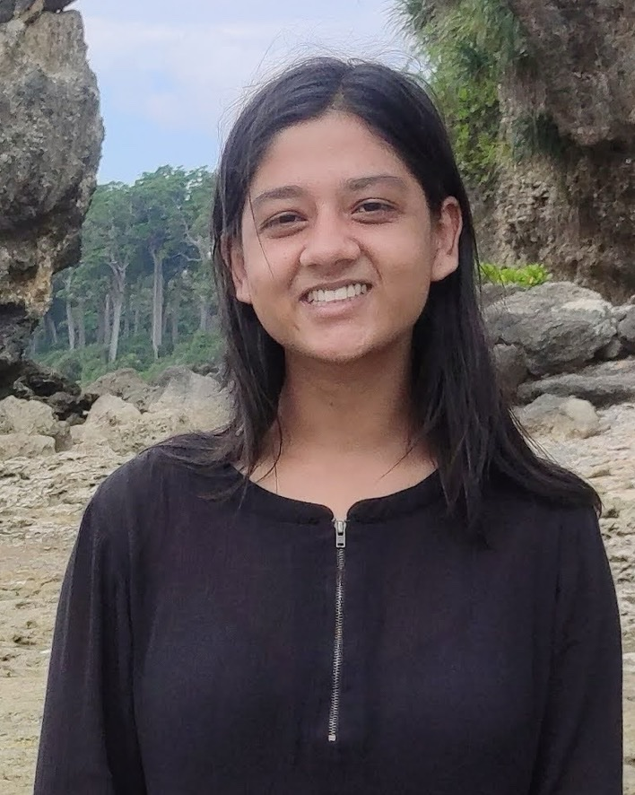

About
I'm a Master's student at the Machine Learning Department, CMU, where I am working with Prof. Albert Gu. My current research explores dynamic tokenization for time-series forecasting using H-Nets. I've also worked with Prof. Beidi Chen on long-horizon multimodal memory systems for agents.
Before CMU, I was a Software Engineer at Google, working across the Cloud and Assistant NLP teams. Alongside my engineering work, I pursued research with Google Research on time-series foundation models, scaling decomposition-based approaches to billion-parameter models, designing training data mixtures, and developing multi-agent systems to improve forecasting performance.
My broader research interests include foundation models, efficient sequence modeling, and representation learning.
Beyond Research
Outside of research, I enjoy exploring local coffee shops and painting. I'm always happy to chat about research ideas, so feel free to reach out, especially if we've met before!